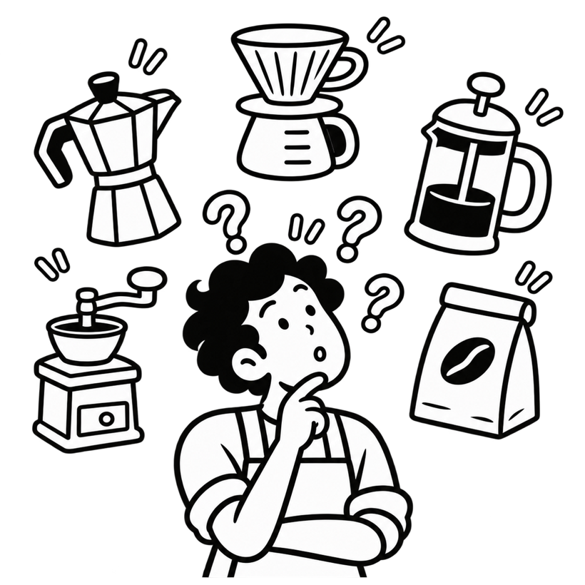
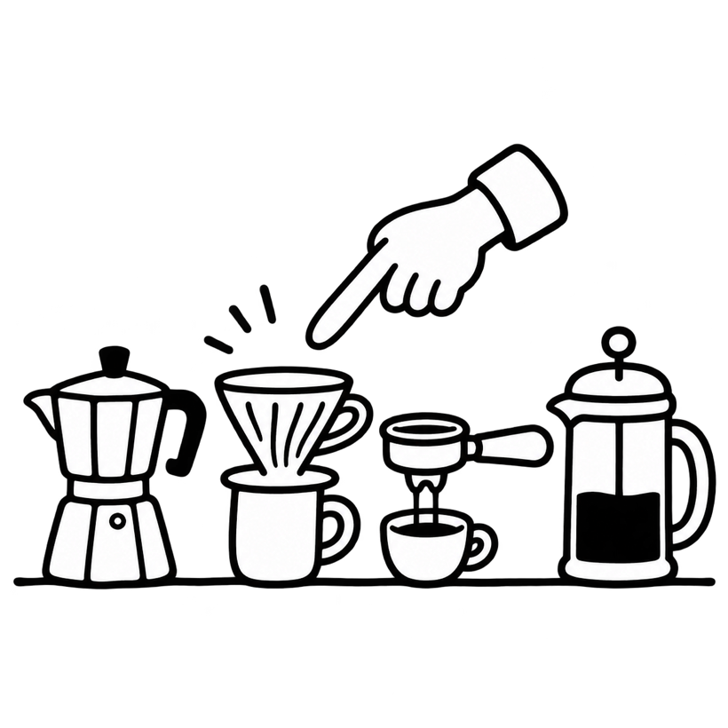
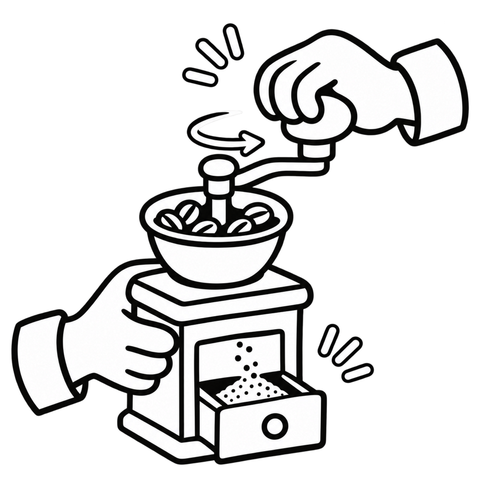
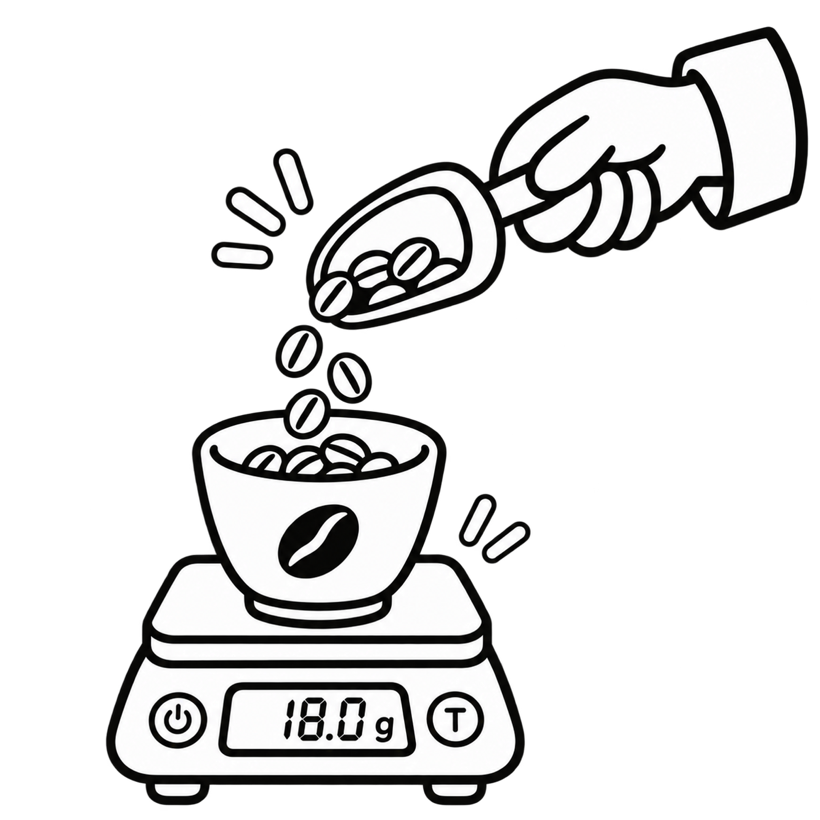
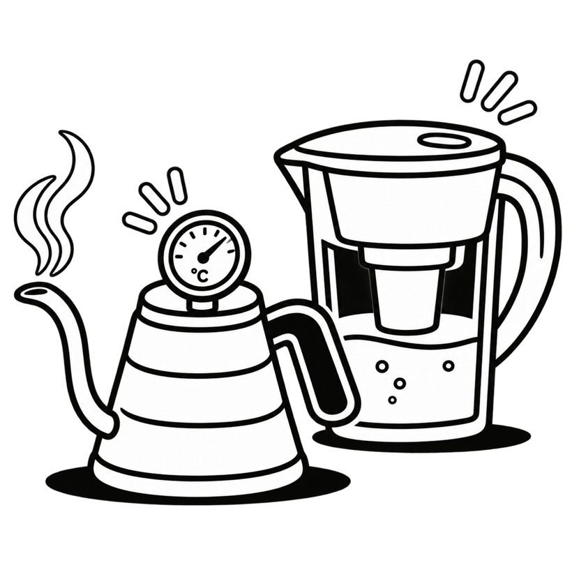

Kawa dla początkujących
Pięć kroków od „jaką kawę wybrać?” do pierwszego naprawdę dobrego kubka. Zero żargonu, obiecujemy.


Wybierz metodę
Zacznij od tego, co masz w kuchni. Kawiarka? Super. Czajnik i dripper? Też super. Ekspres kolbowy? Jeszcze lepiej. Każda metoda lubi trochę inną kawę.
Przelew · Kawiarka · Espresso · French press

Wybierz smak, nie kraj
Nie musisz znać Etiopii od Kenii. Zadaj sobie jedno pytanie: wolę owocowo i lekko czy czekoladowo i mocno? Owocowe = jasne palenie. Czekoladowe = średnie i ciemne.

Kup ziarna i mielenie
Najwięcej smaku daje kawa mielona tuż przed parzeniem. Nie masz młynka? Zmielimy ją za Ciebie – przy produkcie wybierz „Pod przelew”, „Pod kawiarkę” itd.

Waż i mierz
Kuchenna waga to najlepsze 30 zł, jakie wydasz na kawę. Proporcja na start: 1 g kawy na 16 g wody do przelewu i french pressa, 1:10 w kawiarce.

Woda ma znaczenie
Najlepsza jest filtrowana, nie prosto z kranu. Temperatura: tuż po zagotowaniu odczekaj 30 sekund (ok. 93°C).
Ściąga na lodówkę
Przepisy na start. Zmieniaj jedną rzecz naraz.